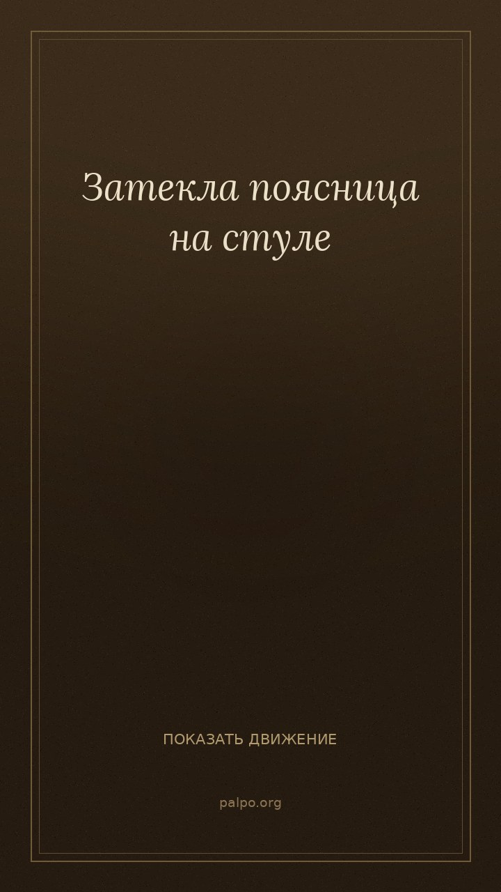
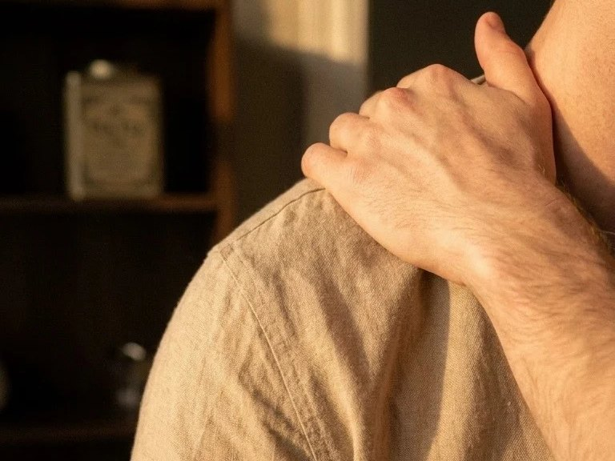
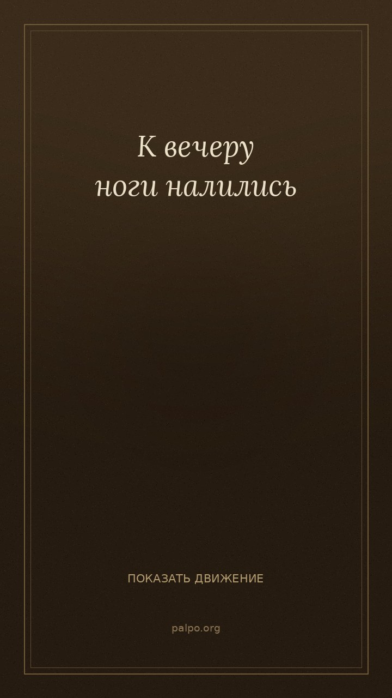
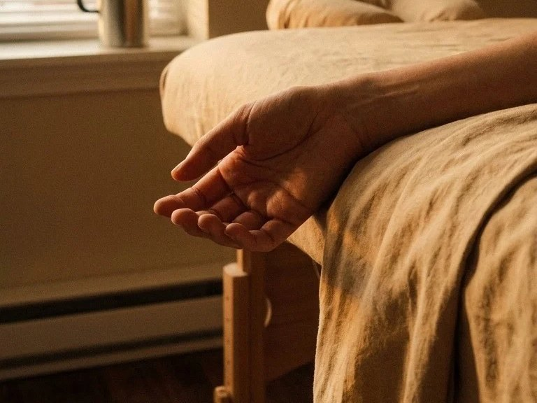
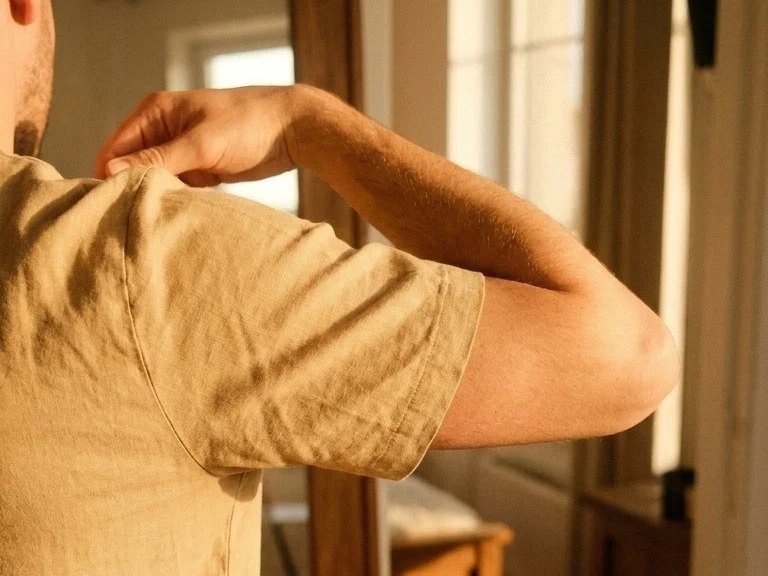
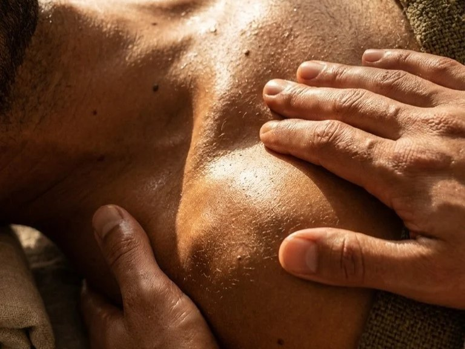
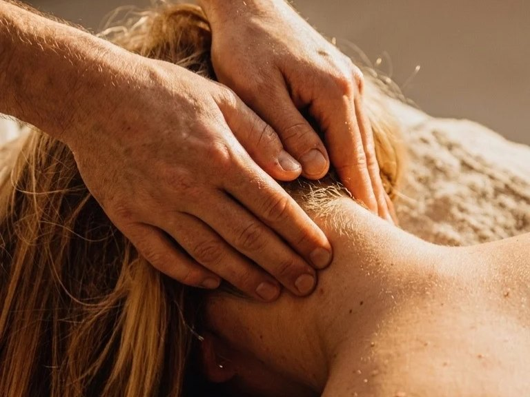
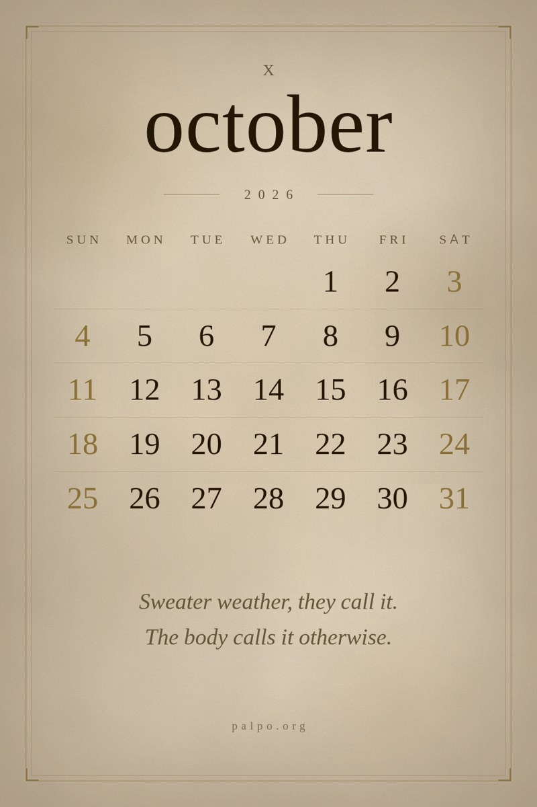

What happens to the body
while you sit
Find your state below
The body

Low back stiff on a chair
40 seconds · sitting
What to do →
- Sit on the edge of the chair, feet flat on the floor.
- Slowly rock the pelvis forward — and let it come back. The movement is small, barely visible to the eye.
- Five or six times, without effort. The back finds by itself where to let go.
What I see at the table
Under my fingers the muscle along the low back feels like sealing wax that has set. It holds the whole weight of the torso while the arms reach forward to the keyboard. The tissue is not in spasm — it is simply tired of holding the line alone.
If it wakes you at night and the morning is worse than the evening was — see a doctor. The observation leans on work by Kett, 2021

Shoulders up by the ears
40 seconds · sitting
What to do →
- Put your palms on the table.
- On the exhale press the palms down — and release after four seconds.
- The shoulders drop by themselves. Three times, between tasks.
What I see at the table
A person lies down on the table, and the shoulders stay up by the ears — as if a jacket had been left on its hanger. The upper trapezius feels like a tensioned steel cable: for hours it keeps the head from falling into the monitor, and it has simply forgotten how to come down on its own.
If lowering the shoulder sends a sharp shooting pain into the fingers, or the neck has locked — see a doctor. The observation leans on work by Szeto, 2005

Legs heavy by evening
60 seconds · sitting or standing
What to do →
- Curl your toes for five seconds — and release.
- Shift your weight onto the heels, lifting the toes off the floor.
- Pull the foot firmly towards you. Ten rolls.
What I see at the table
The body often holds water in the tissues for weeks, and that creates a false sense of extra weight. When the fluid leaves, the legs stop feeling like lead.
If the swelling is in one leg only, or comes with heat or a sharp bursting pain — see a doctor. The observation leans on work by Ludbrook, 1966

By evening the hand stops being light
40 seconds · sitting
What to do →
- Take the muscular pad in the fork between thumb and index finger, using the thumb and index of the other hand.
- Slowly, without a jerk, sink the finger in and hold an even pressure for forty seconds, breathing calmly.
- Then the other hand.
What I see at the table
I take that hand with almost everyone. Not because anyone asked — when a person lies down the hand is simply there, and I take it. And almost always there is a knot in it. The person does not know about it. They came in with a neck.
If numbness in the fingers stays, if things fall out of your hands, if you have lost the sense of hot and cold — see a doctor.

A burning spot between the shoulder blades
A minute · standing at a wall
What to do →
- Press a ball to the wall next to the sore spot — about a palm to the side, closer to the spine or higher.
- Look not for pain but for a response: the point where pressing echoes in that same familiar place.
- Having found it, do not roll. Leave your body weight on it for thirty to forty seconds and breathe calmly.
If pain shoots down the arm to the fingers, if you cannot lower your chin to your chest, if numbness stays after you have stepped away from the wall — see a doctor.

The face is heavy in the morning
A minute · sitting
What to do →
- Cross your palms so that the fingertips land in the hollows above the collarbones.
- Breathe in through the nose. On a long exhale sink the fingers down and inward just a little, a millimetre or two, without pressure and without pain.
- Five breaths.
What I see at the table
When people ask me to do something about the face, I do not put my hands on the face. First on the collarbones. There, in the hollows above the bone, it is dense by evening in almost everyone: the shoulders stood a little higher than they needed to all day, and the hollows closed.
If swelling comes suddenly and holds half the face, if dense nodes sit in the skin of the neck — see a doctor. Swelling of the lips or the throat with difficulty breathing is an ambulance, not a massage.

A brick under the back of the head by evening
A minute · sitting
What to do →
- Sit down and lace your fingers behind your head. Do not pull the head with your hands.
- On the inhale send only your gaze upward, for five seconds.
- On a long exhale relax the shoulders and let the weight of the arms lower the chin to the chest. Three times.
If one eyelid suddenly drops, if you see double, if fields of vision fall out, if swelling appears around the eye socket — see a doctor.
Didn't find yours — twenty years of observations in the channel, searchable by word

A calendar where the numbers are part of the picture
Made for a phone screen. Air is left at the top for the clock and at the bottom for the dock. One line of observation, which you see for thirty days running.
{kind=link}
{kind=link}
The next month appears here in advance.

I work with my hands, but I notice with my eyes. Twenty years at the table have shown me more about bodies — and about people — than I expected. Here I put it into words. As it is, without textbooks.
New states appear every week. In the channel first.
What I actually work with

“I've kept this balm in the room for two years now. I use it before dense work — shoulders, sacrum, the deep points. Thick, it follows the finger, it doesn't run. It lasts a long time. I work with it, and I'm content.”

“A cream of dense texture — I can work with it for an hour and a half straight, it doesn't get sticky, it doesn't wear off. After the session the skin looks as if it had exhaled.”
Questions
What can I get here?
Your state in the list above, and one movement of a minute for it — sitting, where you are now, buying nothing. Under every state there is a line about when this is not enough and a doctor is needed.
Is this health advice?
No. I am not a doctor and do not claim to be. These are observations from the table, not medical recommendations. If something hurts, that is for a doctor. This is something else: how the body behaves, what it says when hands listen to it.
How long have you been doing this?
I came into the profession at forty. Daily at the table since 2006. Up to ten sessions a day.
What is the Shelf?
A section about the objects I work with: oils, tools, textiles. Not advertising — observations on how a specific thing changes the work. I only write about what I actually use.
Why do you use Pinterest?
Because it is search, not a feed. Someone looks up what shoulder tension is, or what a massage room looks like, and ends up here. Pinterest moves slowly and it lasts. A pin published a year ago still works today.
Atmosphere
“I like the moment between sessions, when the room is empty. Light, oil, the edge of the table. Everything in its place. And nothing is needed.”